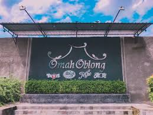
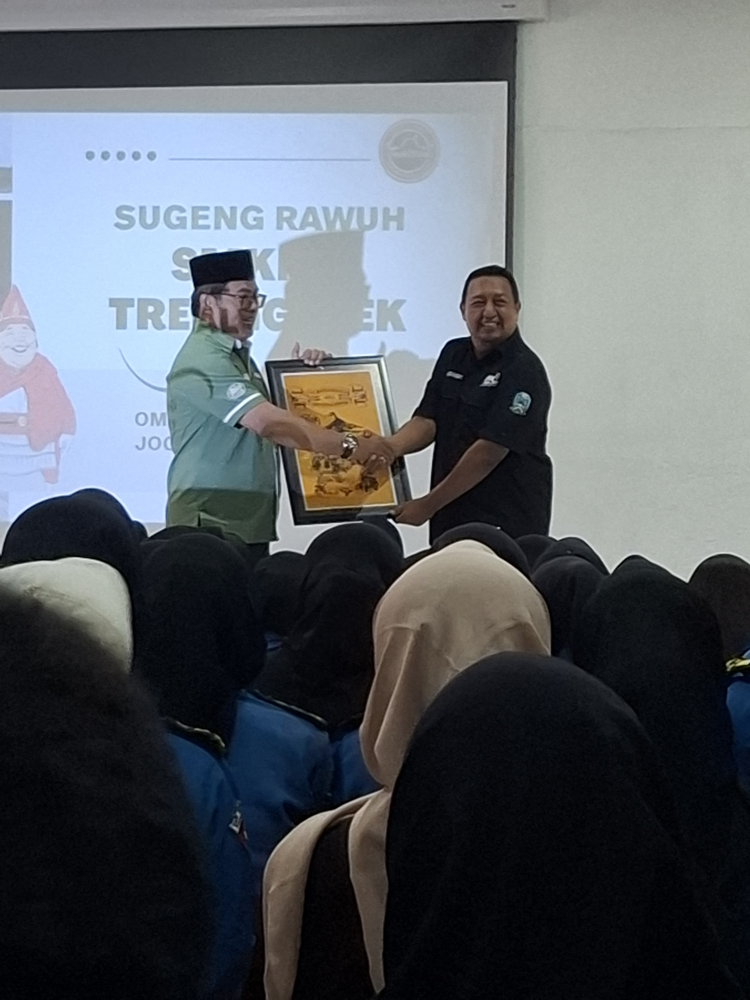

Kunjungan industri hari pertama
Kunjungan industri hari pertama di rumah oblong sangat menyenangkan Kita bisa melihat baju baju kaos batik dan kain kain yang bagus, saya disana diperkenalkan apa itu rumah oblong dan pengelanan lingkungan

Foto depan rumah oblong

Penyerahan